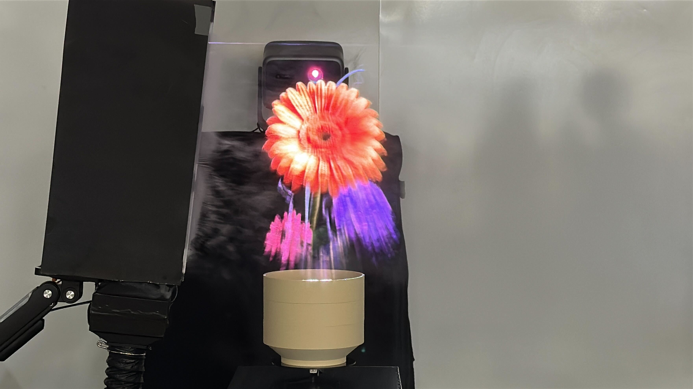
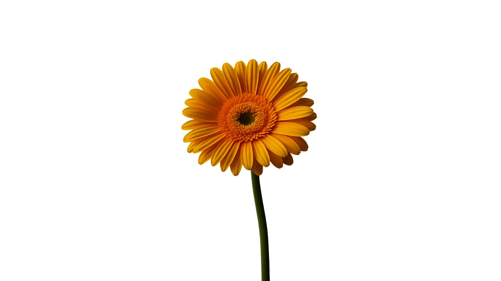
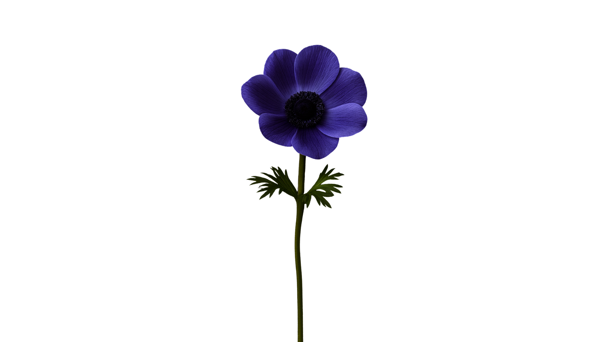
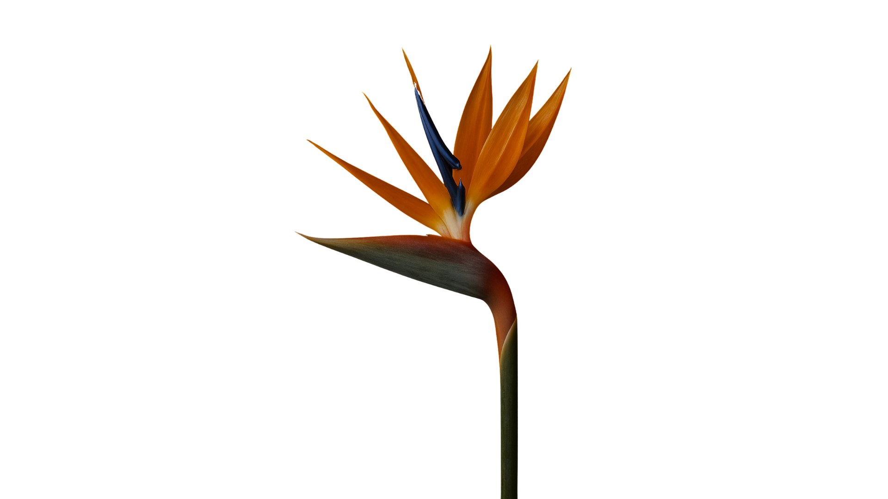
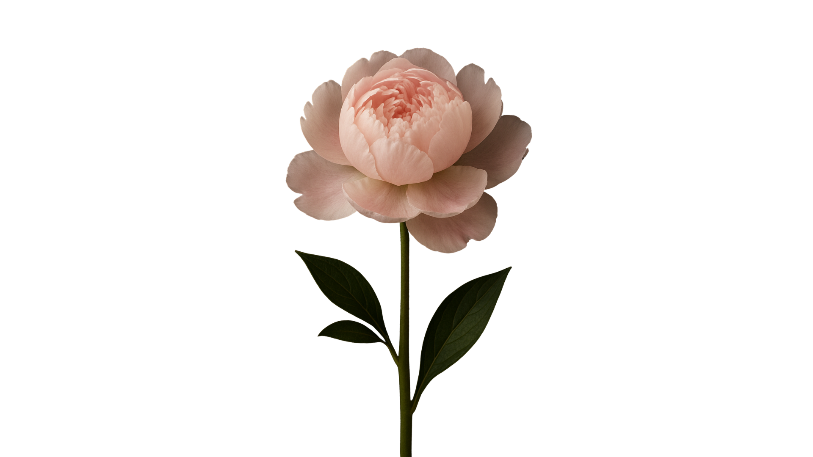
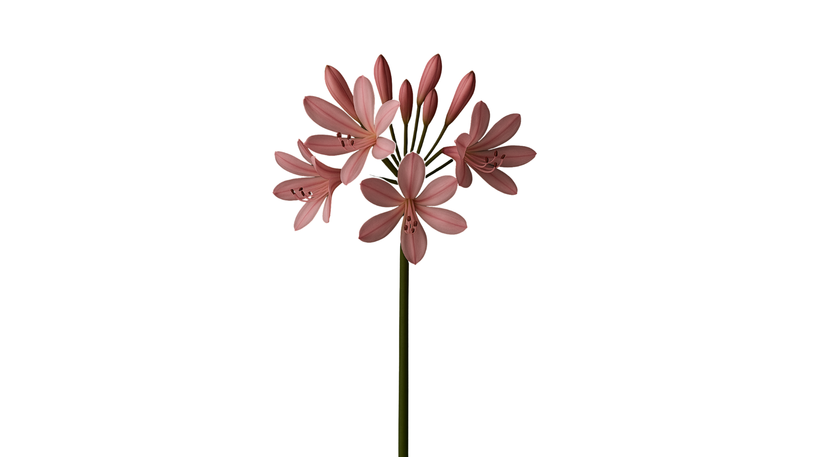
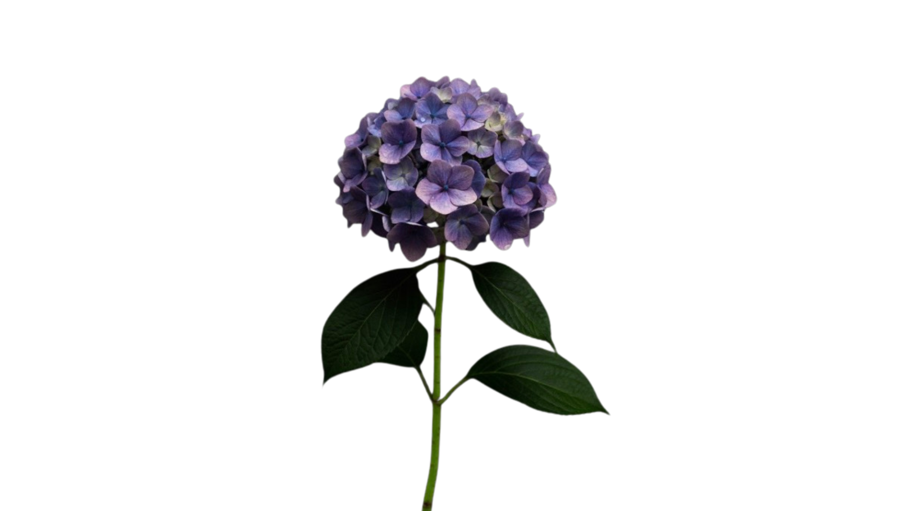
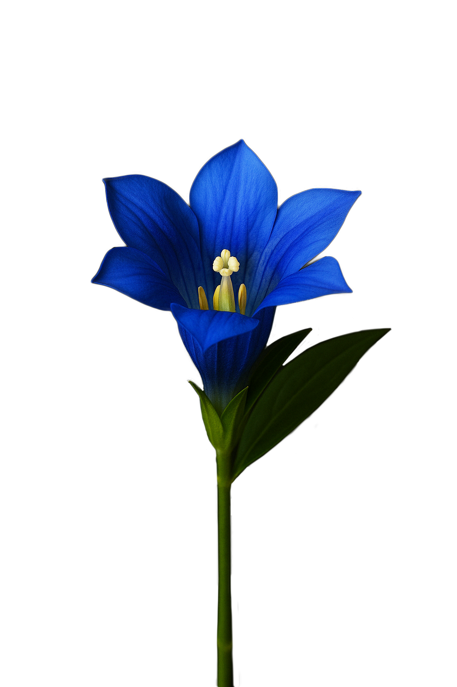

Hibana: From Whispers to Bloom
An AI-driven collective secret-sharing installation. Speech becomes emotion becomes light, and no one secret is ever exposed.
Overview
Secrets are universal burdens. Some are small embarrassments, others are weights people carry for years. Living in Japan, the team became drawn to the cultural sense of Ma (間), the interval, and to the delicate balance between holding emotion in and letting it out.
Hibana (秘花), literally hidden flower, asks whether a system can let secrets be shared in a way that lightens the soul without revealing them to the world. Participants speak into vases. The system detects the emotional shape of what they say, then discards the words. The room responds.

The question
Design question
Can a system let secrets be shared to lighten the soul, while keeping them entirely unknown to the world?
The conventional answer to disclosure is exposure. Most platforms that invite emotional content turn it into something legible: a category, a tag, a feed item, a thread. Hibana refuses that translation. Speech is treated as a signal, not a record. The room learns the shape of feeling without ever knowing the words.
Three design moves.
Language as trigger, not content. Speech is never stored, displayed, or transcribed back to the user. It exists only long enough for an emotion classifier to read it, then is discarded. What is heard cannot be reconstructed.
Collective rather than individual. No single participant produces a result. Each contribution accumulates. Only when three voices have entered the system does the installation respond, so emotional weight is something the group carries together rather than something one person performs alone.
Abstract transformation rather than representation. The system does not show what anyone said or felt. Instead, it produces a bloom, an ephemeral visual form that cannot be decoded back into individual meaning. The output is beautiful precisely because it is illegible.
Method
Speech becomes weight becomes light.
Input. Three 3D-printed vases sit around the installation. A hidden microphone beneath each one captures speech without being physically attached or visible. A participant approaches a vase, speaks into it, then carries it to the central podium.
Interpretation. OpenAI's Whisper transcribes the audio for just long enough for a Transformer-based classifier to map it onto one of eight underlying emotional states. The transcription is then deleted. The eight states are love, anger, embarrassment, surprise, sadness, shyness, joy, and fear, used as internal parameters only and never shown to the user.
Accumulation. The podium is instrumented with load cells read by an ESP32 microcontroller. As each vase is placed, the combined weight grows. Individual placements produce no immediate feedback. When the threshold is reached, the system commits.
Manifestation. A fog machine fires. The projector wakes. A single Hibana, drawn from one of fifty-four pre-designed visual states, fades in over the fog and then fades out, leaving the room as it was before.
Hibana additions · HTMLAt a glance
Three voices, eight states, fifty-four blooms.
The combination key is generated by sorting the three detected emotions, so the order in which people enter the room does not change the outcome, only the combination does. Pure AI generation was considered and rejected; fifty-four hand-designed base states gave a stronger aesthetic floor than letting the model paint freely.







What it means
AI as a medium for empathy, not extraction.
Most emotion-aware systems are built to surface and categorise affect. They want the user to be legible. Hibana works the other way around. It uses the same classifier technology, but for the opposite goal: to acknowledge that someone has felt something, without ever needing to name it back to them.
The piece also argues that emotional weight is easier to carry when it is collective. Three people, three vases, one podium. The threshold is reached by the group, not the individual. The release belongs to all of them, and to none of them in particular.
The system does not ask anyone to define themselves. It listens, transforms, and lets the feeling bloom for a moment before disappearing.
Built with
- My role
- UI/UX design and hardware interaction build. Vase form, podium electronics, Python integration on the hardware side.
- Team
- Catherine Liu, Meril Pullisaar, Rosie Gibson, Bella Yu, Jiatong Jin.
- Course
- Embodied Interactions, Keio University Graduate School of Media Design, Dec 2025.